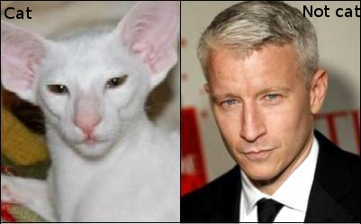
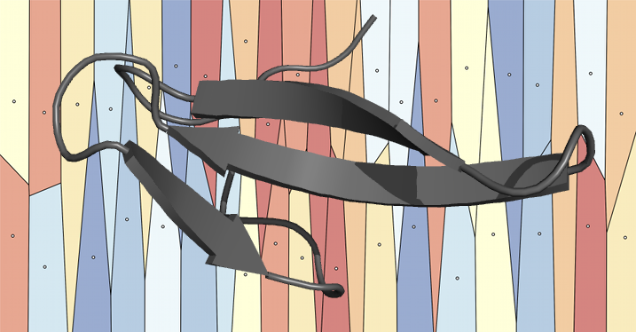
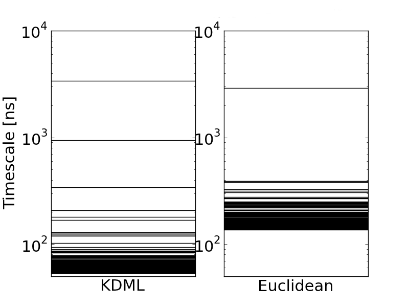

- Resolving conformation slow conformation changes within a folding data set.
- MSMAccelerator: Adaptive sampling
- OpenMM Script Builder
Protein Folding is Easy
Towards MSMs for Conformational Change
Robert T. McGibbon
April 22, 2013
A Presentation in Three Acts
MSM Parameter Selection
- MSM construction is a mix of supervised and unsupervised learning problems.
- Unsupervised learning is the problem of finding "hidden" structure in unlabeled data, where there's no right answer.
- How many conformational states does a protein adopt? The answer is in the eye of the beholder.
- Parameterizing a transition matrix is supervised.
MSM State Decomposition
The MSM state decomposition, clustering, is characterized by a bias-variance trade off.
- Bias: As you lower the number of states, you introduce systematic error in modeling the dynamics.
- Hamiltonian dynamics are completely Markovian in $\mathbb{R}^{6N}$
- Variance: As you raise the number of states, you're increasing subject to statistical noise in the transition matrix estimation.
- How do we balance this trade off?
Choosing the states' shape

- Conformational change is characterized by slow conformationally subtle transitions.
- To resolve these transitions in our models, our states need to be "smaller".
- Increasing the number of states is not the only way to lower the bias -- we can also pick the shape of our states more intelligently.
Protein motions aren't isotropic
Our MSM states shouldn't be either
- Different structural degrees of freedom should be weighted according to their discriminatory power (equilibration rate).
- Learn a distance metric for clustering which maximally separates kinetically close and kinetically distant conformations.
Large-Margin Learning
|  |  |
- A common goal in supervised learning is to construct binary classifiers, e.g. actives vs. inactives, cats vs. others.
- The "margin" is the distance of the object's score from the the decision threshold.
- Large margin approaches attempt to find a classifier via optimization methods that maximize the margins.
Large-Margin Distance Metric (KDML)
- A set of $N$ triplets of structres, $(a, b, c)$, where $a$ and $b$ appear close together in a single traj., while $a$ and $c$ don't.
- Find a squared Mahalanobis metrics, and maximize the margin between the close and far pairs.
$$ d^{\mathbf{X}}(\vec{a}, \vec{b}) = (\vec{a} - \vec{b})^{T} \mathbf{X} (\vec{a} - \vec{b}) $$
$$ \max_{\mathbf{X},\rho} \left[ \alpha \rho - \frac{1}{N} \sum_i^N \lambda \left(d^\mathbf{X}(\vec{a}_i,\vec{c}_i) - d^\mathbf{X}(\vec{a}_i, \vec{b}_i) - \rho \right) \right] $$
Optimization and Constraints
$$ \max_{\mathbf{X},\rho} \left[ \alpha \rho - \frac{1}{N} \sum_i^N \lambda \left(d^\mathbf{X}(\vec{a}_i,\vec{c}_i) - d^\mathbf{X}(\vec{a}_i, \vec{b}_i) - \rho \right) \right] $$
- The matrix $\mathbf{X}$ is constrained to be positive semidefinite.
- Efficient optimization by gradient descent with rank-1 updates -- maintains p.s.d.
- Shen, C.; Kim, J.; Wang, L. Scalable large-margin Mahalanobis distance metric learning. IEEE Trans. Neural Networks 2010, 21, 1524–1530
Model System

- 2D Brownian dynamics, where vertical diffusion constant is 10x greater than the horizontal diffusion constant.
$$\mathbf{X} = \begin{pmatrix} 0.9915 & 0.0 \cr 0.0 & 0.0085 \end{pmatrix}$$
Model System

KDML distance metric gives more converged timescales with fewer states.
Fip35 WW Domain (Shaw)
Lets look at some real data

- Sampled k=20,000 triplets at $t_{close}$ = 2 ns, $t_{far}$ = 20 ns
- Structures projected onto the sine and cosine components of the backbone dihedrals.
Fip35 WW Domain (Shaw)
n states: 5000, lagtime: 75 ns

Unweighted metrics miss slow near-native dynamics
- The folding timescale is remarkably robust to changes in the distance metric.
- New timescales are observed in the 100 ns - 1 μs regime, corresponding to near-native hydrogen bond reorganizations in the turns.

Unweighted metrics miss slow near-native dynamics

MSM State Decomposition Outlook
- This is the right direction, but not necessarily the right algorithm.
- Numerical optimization of the metric challenging & can be poorly conditioned.
- Low rank metric = dimensionality reduction.
- Enables computational access to more sophisticated clustering.
- Sparse metric = feature selection.
- Promising for biophysical insight.
MSMAccelerator
Distributed Adaptive Sampling
MSMAccelerator Architecture
- Distributed messaging passing design (ZeroMQ).
- Two types of clients can connect to the adaptive server:
- Simulator: Receives initial conditions, propagates dynamics.
- Modeler: Receives trajectory data, builds an MSM.
- Adaptive server maintains weights for a multinomial distribution, from the most recent MSM.
- Setup system with serialized OpenMM XML files.
- Code on github.
Adaptive Sampling Algorithms
- How do we switch between sampling strategies?
- Voelz surpisal strategy / mutual information between state decompositions.
- Smooth interpolation, simulated annealing
- The explore/exploit tradeoff has strong overlap with the multi-armed bandit, and probabalistic multi-robot mapping problems.
- MSMAccelerator provides the rapid prototyping capability.
MSMAccelerator
Ala5 (amber99sbiln, implicit) OpenMM 5.1 / MSMBuilder2.6. 1000 rounds (1μs aggregate) of adaptive sampling (even).
OpenMM Script Builder
Effortless OpenMM simulation setup
Thanks everyone!
And especially Vijay, Christian and Kyle.
www stanford.edu/~rmcgibbo
github github.com/rmcgibbo